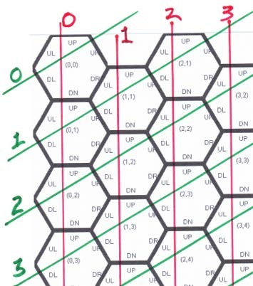
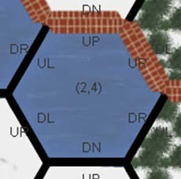
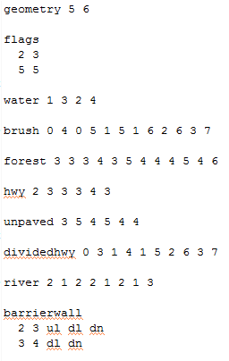
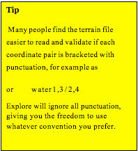

Explore terrain descriptions are simple text files. Thus you can create your own mazes in any simple text editor. (Explore graph descriptions must be .txt files. Explore does not understand word processer or document files, such as .doc or .pdf.)
Locations
Locations in the terrain file are specified with Hex coordinates, corresponding to a vertical column number and a diagonal row number, as highlighted in Figure 3. Note that cell(0,0) is at the upper left corner, and rows and columns indexes grow larger as you move right and down. The left number in cell(x,y) corresponds to the cell’s column; the right number to its diagonal row. The red star in Figure 3 is in cell(1,2).
(Tip: You can make a screen capture of a terrain map with no features, and print it to create a nicely labeled design layout grid. Creating the text file is much easier if you draw your terrain design on the grid and then transcribe the cell appropriate cell numbers.)

Figure3 — Hex Coordinate system

Figure4 — Cell Walls are named by their direction from the cell center
Directions
Cell walls are named by their direction from the center of the cell. In terrain files, these wall names (in clockwise order from the top of the cell) are abbreviated “up”, “ur”, “dr”, “dn” “dl”, and “ul”.
Case is important! While Explore will ignore case in some instances, it is best practice to use only lower case characters in a terrain description file.
File Structure
A legal Explore terrain description consists of a geometry section (which defines the dimensions of the map) followed by sections that describe terrain, connectors, and flag locations.
With the exception of the geometry section (which must appear only once, and must be first in the file) and the flag section (which may appear only once in a file), map description sections may be listed in any order and may be repeated (with different location information) as many times as you need.
Figure 8 shows an example terrain description file which includes an instance of all available features and connectors.
With the exception of the geometry and barrierwall section (detailed later), each of the terrain description sections are structured as a keyword (like “water” or “river”) followed by a list of hex coordinates.

Figure5 — file structure
Terrain Coordinates.
For terrain keywords, the list of coordinates represents individual cells of the same terrain. Thus, the list can be one or more coordinates and they can be contiguous, isolated, or broken into several clusters. Some designers find it useful to define each cluster of like terrain in a different section. Explore doesn’t care.
Connector Paths.
The coordinates supplied with a connector, though, must meet constraints that assure they describe a continuous path through the centers of adjacent cells. Thus the coordinate list accompanying each connector keyword (a river, for example) must include at least two coordinates, and the coordinates must, in order, pass through centers of adjacent cells.

Flag Coordinates.
The flag keyword must be followed by exactly two coordinates: one for the blue start flag and one for the red goal (or end) flag.
Geometry.
The geometry keyword must be followed by exactly two integers. The first represents the number of columns in the board; the second the number of horizontal (not hex diagonal) rows. The resulting board is always rectangular.
Barrier Walls.
Barrier walls are described in short sections (called border segments), where each section consists of all the cell walls (by direction) in a particular cell (by coordinate) that are blocked by a barrier. For example, the following border segment describes two full barriers in Figure 4:
2 4 up ur
Each such border segment consists of a coordinate pair followed by a list of cell walls, named by direction.
A barrierwall keyword can be followed by as many border segment descriptions as convenient. Some designers like to describe each connected run of barrier in a separate barrierwall section.